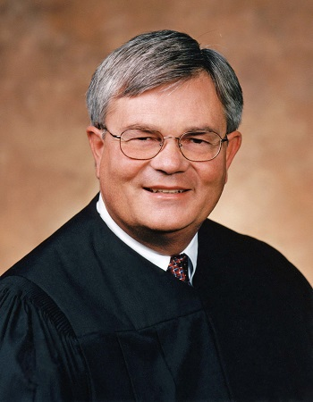

Вернуться
Американский производитель спортивной одежды, базирующийся в Брайтоне, одном из районов Бостона, штат Массачусетс, США. Компания была основана в 1906 году, как «New Balance Arch Support Company» и стала одним из крупнейших мировых производителей спортивной одежды, обуви и инвентаря. Ключевые фигуры Джим Дейвис, Уильям Дж. Райли
